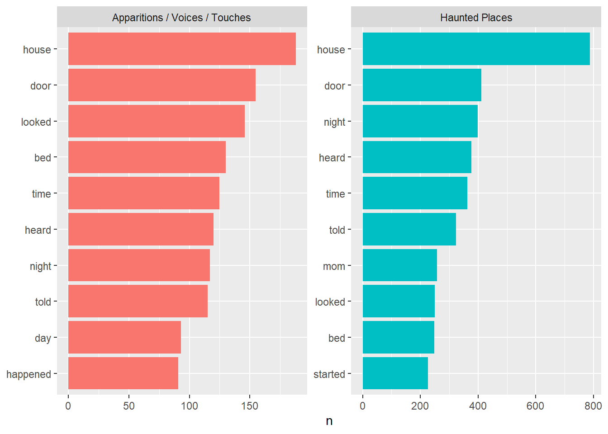

words <- df2 |>unnest_tokens(word, text) |>filter(!str_detect(word, "^[0-9]+$"))
words |>count(category, word, sort =TRUE) |>group_by(category) |>slice_head(n =10) |>pivot_wider(names_from = category, values_from = n,values_fn = as.character,values_fill ="Not in top 10" ) |>kable()
word
Apparitions / Voices / Touches
Haunted Places
i
2281
4982
the
1989
6155
and
1527
4031
was
1315
3085
to
1214
3059
my
1085
2732
a
962
2429
it
726
2018
in
714
2111
of
586
1821
stop_words
# A tibble: 1,149 × 2
word lexicon
<chr> <chr>
1 a SMART
2 a's SMART
3 able SMART
4 about SMART
5 above SMART
6 according SMART
7 accordingly SMART
8 across SMART
9 actually SMART
10 after SMART
# ℹ 1,139 more rows
words <- words |>anti_join(stop_words, by ="word")
words |>count(category, word, sort =TRUE) |>group_by(category) |>slice_head(n =10) |>pivot_wider(names_from = category, values_from = n,values_fn = as.character,values_fill ="Not in top 10" ) |>kable()
word
Apparitions / Voices / Touches
Haunted Places
house
188
787
door
155
412
looked
146
250
bed
130
248
time
125
363
heard
120
377
night
117
398
told
115
323
day
93
Not in top 10
happened
91
Not in top 10
mom
Not in top 10
258
started
Not in top 10
227
words |>count(category, word, sort =TRUE) |>group_by(category) |>slice_head(n =10) |>ggplot(aes(y =reorder_within(word, n, category), x = n, fill = category)) +geom_col(show.legend =FALSE) +facet_wrap(~category, scales ="free") +scale_y_reordered() +labs(y =NULL)

Con estas repeticiones de palabras nos podemos dar una idea de como el modelo va a a predecir las categorias, ya que tomaría en cuenta la repetición y conteo de palabras por cada categoría.
Sparse Matrix
library(Matrix)
Adjuntando el paquete: 'Matrix'
The following objects are masked from 'package:tidyr':
expand, pack, unpack
tokens <- df2 |>unnest_tokens(word, text) |>filter(!str_detect(word, "^[0-9]+$")) |>anti_join(stop_words, by ="word")
counts <- tokens |>count(doc_id, word, name ="freq")
X <-cast_sparse( counts,row = doc_id,col = word,value = freq)
The following objects are masked from 'package:yardstick':
precision, recall, sensitivity, specificity
The following object is masked from 'package:rsample':
calibration
The following object is masked from 'package:purrr':
lift
# definimos CV estratificado en 5 foldsctrl <-trainControl(method ="cv", number =5)# grid de posibles valores de laplacegrid <-expand.grid(laplace =c(0, 0.5, 1, 2),usekernel =FALSE,adjust =1)set.seed(123)cv_model <-train(category ~ ., data = train_df_bin, method ="naive_bayes", trControl = ctrl,tuneGrid = grid)print(cv_model)
Naive Bayes
293 samples
6609 predictors
2 classes: 'Haunted Places', 'Other'
No pre-processing
Resampling: Cross-Validated (5 fold)
Summary of sample sizes: 235, 234, 234, 235, 234
Resampling results across tuning parameters:
laplace Accuracy Kappa
0.0 0.3720047 0
0.5 0.3720047 0
1.0 0.3720047 0
2.0 0.3720047 0
Tuning parameter 'usekernel' was held constant at a value of FALSE
Tuning parameter 'adjust' was held constant at a value of 1
Accuracy was used to select the optimal model using the largest value.
The final values used for the model were laplace = 0, usekernel = FALSE
and adjust = 1.